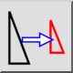
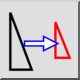
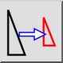
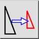

Schalen
Werkbalk / icoon:
 

Menu: Modificeren > Schalen
Sneltoets: S, Z
Opdrachten: scale | sz
Dit is een automatische vertaling.
Werkbalk / icoon:
 

Menu: Modificeren > Schalen
Sneltoets: S, Z
Opdrachten: scale | sz
Schaal objecten met een bepaalde factor naar een bepaald centrum toe.